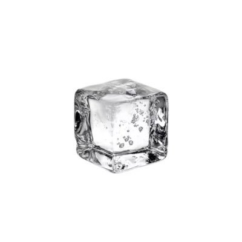

默与合
@MoYoHe_
@rabbot1Il 自私一点也没毛病，家人有些时候的做法和观点本身就打着对你好的念头，结果光是考虑对自己有啥好处了，而且我感觉姐弟之间关系差也没有可能是因为年龄差的原因，我跟我哥就是差的年龄太大，现在基本上没要事不发信息的这类

？
@rabbot1Il
突然开始反思为什么和家人这么疏离，我觉得很大程度是因为认知水平差异太太太大了，呆在一起就会产生厌蠢的情绪，我不知道该怎么办，不是一个好女儿啊，越长大越自私了…（不过我弟一直就没不自私过，跟他比一下我简直是圣人…）
想不明白，感觉是道德困境